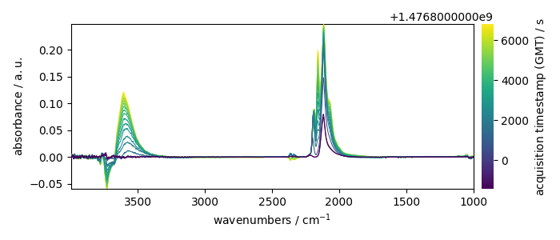
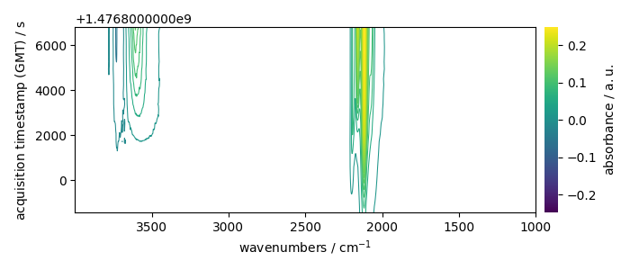
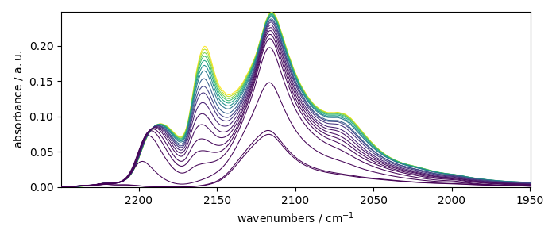
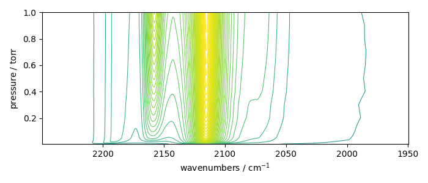
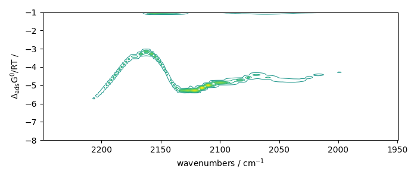
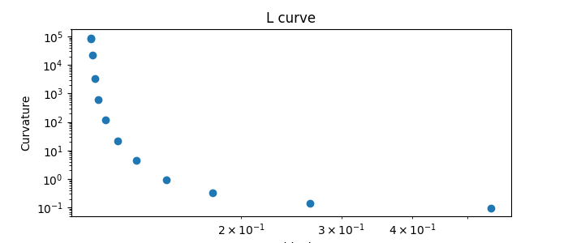
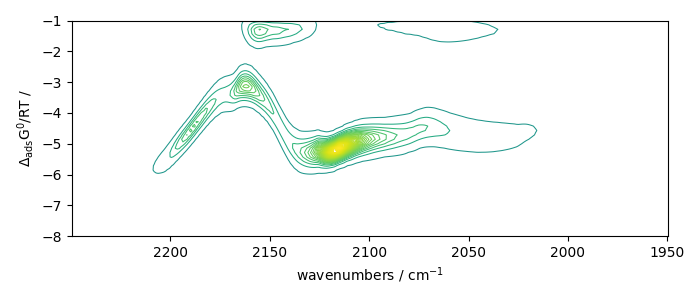
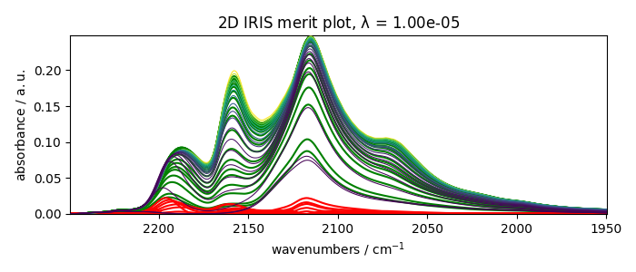
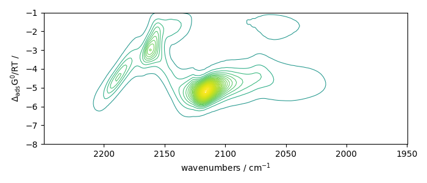
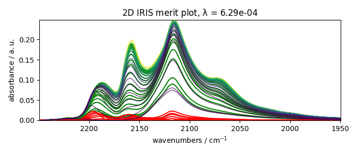

Note
Click here to download the full example code
2D-IRIS analysis example¶
In this example, we perform the 2D IRIS analysis of CO adsorption on a sulfide catalyst.
import spectrochempy as scp
Uploading dataset¶
X has two coordinates:
* wavenumbers named “x”
* and timestamps (i.e., the time of recording) named “y”.
print(X.coordset)
CoordSet: [x:wavenumbers, y:acquisition timestamp (GMT)]
Setting new coordinates¶
The y coordinates of the dataset is the acquisition timestamp. However, each spectrum has been recorded
with a given pressure of CO in the infrared cell.
Hence, it would be interesting to add pressure coordinates to the y dimension:
pressures = [
0.003,
0.004,
0.009,
0.014,
0.021,
0.026,
0.036,
0.051,
0.093,
0.150,
0.203,
0.300,
0.404,
0.503,
0.602,
0.702,
0.801,
0.905,
1.004,
]
c_pressures = scp.Coord(pressures, title="pressure", units="torr")
Now we can set multiple coordinates:
CoordSet: [_1:acquisition timestamp (GMT), _2:pressure]
By default, the current coordinate is the first one (here c_times). For example, it will be used by default for
plotting:
prefs = X.preferences
prefs.figure.figsize = (7, 3)
_ = X.plot(colorbar=True)
_ = X.plot_map(colorbar=True)
- 
- 
To seamlessly work with the second coordinates (pressures), we can change the default coordinate:
X.y.select(2) # to select coordinate ``_2``
X.y.default
Let’s now plot the spectral range of interest. The default coordinate is now used:
X_ = X[:, 2250.0:1950.0]
print(X_.y.default)
_ = X_.plot()
_ = X_.plot_map()
- 
- 
Coord: [float64] torr (size: 19)
IRIS analysis without regularization¶
Perform IRIS without regularization (the loglevel can be set to INFO to have information on the running process)
Plots the results
- 
With regularization and a manual search¶
Perform IRIS with regularization, manual search
iris = scp.IRIS(X_, "langmuir", q=[-8, -1, 50], reg_par=[-10, 1, 12])
iris.plotlcurve(title="L curve, manual search")
iris.plotdistribution(-7)
_ = iris.plotmerit(-7)
- 
- 
- 
## Automatic search
Now try an automatic search of the regularization parameter:
iris = scp.IRIS(X_, "langmuir", q=[-8, -1, 50], reg_par=[-10, 1])
iris.plotlcurve(title="L curve, automated search")
<AxesSubplot:title={'center':'L curve'}, xlabel='Residuals', ylabel='Curvature'>
The data corresponding to the largest curvature of the L-curve are at the second last position of output data:
iris.plotdistribution(-2)
_ = iris.plotmerit(-2)
""
# scp.show() # uncomment to show plot if needed (not necessary in jupyter notebook)
- 
- 
''
Total running time of the script: ( 0 minutes 31.271 seconds)